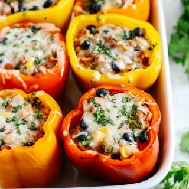

Stuffed Bell Peppersd

Stuffed bell peppers made healthy by including brown rice! This is a satifing meal.
Ingredients
- 16 oz tomato sauce
- 6 bell peppers, any color
- 1 lb ground beef, 95% lean
- 1 cup uncooked brown rice
- 1 medium onion, chopped
- 1/2 t salt
- 1/2 t pepper
- 1/2 t garlic power
- 1 1/2 cup part-skim shredded mozarrella cheese
Steps
- Preheat oven to 350F
- Cook brown rice
- De-seed bell peppers
- Place de-seeded peppers in sauce pan and cover peppers with water
- Bring water to boil, cook peppers for 10 minutes
- In fry pan, brown ground beef and drain
- Add chopped onion, spices, and tomato sauce to ground beef, simmer 10 minutes
- Mix in rice
- Place cooked peppers in 9 x 13 pan, stuff with beef & rice mixture
- Cook in oven for 45 minutes
- Top with cheese, cook additional 5 - 10 minutes (until cheese is melted)
Omit cheese for dairy free version.